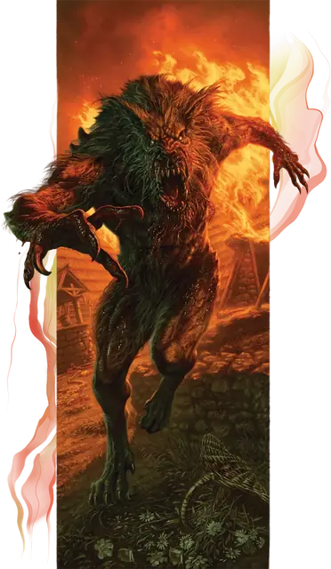

Лугару
Loup Garou
Среднее или Маленькое Чудовище (Ликантроп), Хаотичное Злое

Класс Защиты 17 Инициатива +9 (19)
Хиты 187 (22к8 + 88)
Скорость 30 футов (40 футов в гибридном облике, 50 футов в облике лютого волка)
| мод | спас | ||
|---|---|---|---|
| СИЛ | 24 | +7 | +7 |
| ЛОВ | 18 | +4 | +9 |
| ТЕЛ | 21 | +5 | +10 |
| мод | спас | ||
|---|---|---|---|
| ИНТ | 14 | +2 | +2 |
| МДР | 16 | +3 | +3 |
| ХАР | 16 | +3 | +3 |
Иммунитеты Испуганный, Очарованный
Чувства Тёмное зрение 120 футов, пассивное Восприятие 18
Языки Общий (не может говорить в облике лютого волка)
Опасность 13 (10 000 опыта; БВ +5)
Особенности
Легендарное сопротивление (3/день). Если лугару проваливает спасбросок, он вместо этого может в нём преуспеть.
Действия
Мультиатака. Лугару совершает две атаки Длинным мечом или Раздиранием в любой комбинации. Он может заменить одну из этих атак на атаку Укусом.
Укус (только в форме лютого волка или в гибридной форме). Бросок рукопашной атаки: +12, досягаемость 5 фт. Попадание: 16 (2к8 + 7) Колющего урона плюс 14 (4к6) Некротического урона. Если цель — Гуманоид, она подвергается следующему эффекту. Спасбросок Телосложения: Сл 18. Провал: Цель проклята. Когда Хиты проклятой цели опускаются до 0, она становится Верволком под управлением Мастера и получает 10 Хитов. Проклятие нельзя снять, пока этот лугару не умрёт. Успех: Цель получает Иммунитет к проклятию этого лугару на 24 часа.
Длинный меч (только в гуманоидной или гибридной форме). Бросок рукопашной атаки: +12, досягаемость 5 фт. Попадание: 18 (2к10 + 7) Рубящего урона плюс 3 (1к6) Некротического урона.
Раздирание (только в форме лютого волка или в гибридной форме). Бросок рукопашной атаки: +12, досягаемость 5 фт. Попадание: 16 (2к8 + 7) Рубящего урона. Если цель — существо Среднего размера или меньше, она Опрокидывается.
Бонусные действия
Перевоплощение. Лугару либо перевоплощается в гибрид лютого волка и гуманоида Среднего размера или в лютого волка Большого размера, либо возвращается в истинную форму гуманоида. Его параметры, кроме размера, не меняются в зависимости от формы. Любое снаряжение, которое он носит или несёт, не трансформируется.
Легендарные действия
У этого существа есть 3 использования Легендарных действий; оно может немедленно после окончания хода другого существа потратить одно использование, чтобы совершить одно из следующих действий. Существо восполняет все потраченные использования в начале каждого своего хода.
Терзающий налёт. Лугару перемещается на расстояние вплоть до половины своей Скорости, не Провоцируя атак, и совершает одну атаку Длинным мечом или Раздиранием.
Внезапный укус. Лугару использует Перевоплощение, принимая гибридный облик или облик лютого волка, а затем совершает одну атаку Укусом. Лугару не может совершить это действие снова до начала своего следующего хода.
Бонус мастерства +5
Среда обитания Город, Горы, Леса
Сокровища Любые
Лугару
Легендарный ликантроп
Лугару — могучие ликантропы, способные обращаться громадными лютыми волками. Они целенаправленно распространяют проклятие ликантропии, собирая стаи послушных верволков, которые обращают селения в руины и опустошают целые края. Разновидность ликантропии, которой заражает лугару, излечивается куда труднее обычной. Только гибель самого лугару способна освободить жертв от этого недуга.